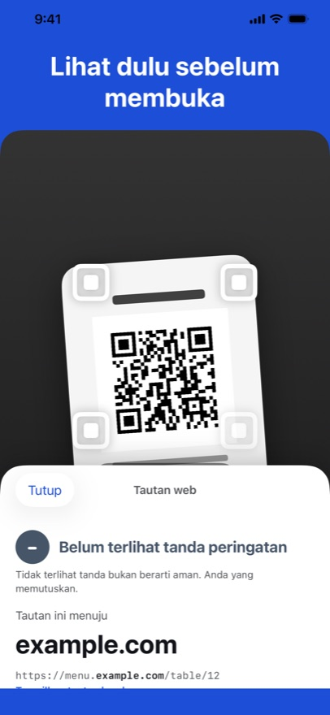
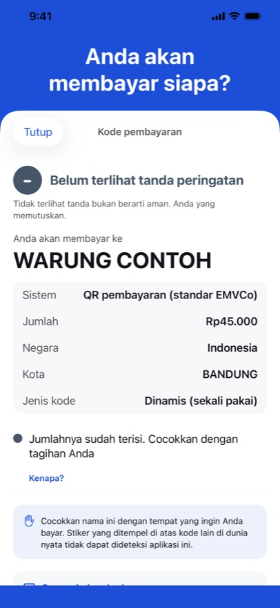
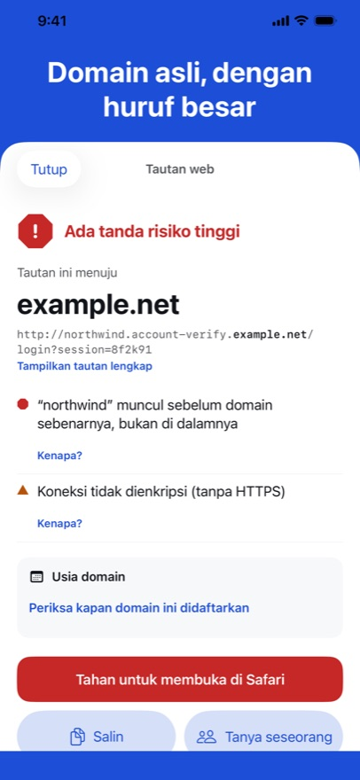

QR Trust Scanner menunjukkan ke mana kode QR atau tautan mengarah sebelum Anda mengetuk: domain asli dengan huruf besar, hal yang patut dilihat lagi, dan — untuk kode pembayaran — siapa yang menerima uangnya. Aplikasi tidak pernah membuka apa pun sendiri, dan semuanya diperiksa di iPhone Anda.



Domain asli, berhuruf besar
Sebuah tautan bisa menaruh kata apa pun yang akrab di depan alamat milik orang lain. Aplikasi menampilkan domain asli lebih dulu.
Anda akan membayar siapa?
Untuk kode QR pembayaran berstandar EMVCo yang dipakai di Vietnam, Brasil, Indonesia, dan Malaysia: penerima, jumlah, dan apakah nilai pemeriksaan kodenya benar.
Tanda, bukan vonis
Setiap tanda adalah satu kalimat sederhana dengan “Kenapa?”. Tiga tingkat, dan Anda yang memutuskan.
Segera hadir di App Store
Data terbuka yang kami gunakan
- Daftar peringatan: PhishDestroy “destroylist” (github.com/phishdestroy/destroylist), Lisensi MIT, © 2019 PhishDestroy.
- Public Suffix List (publicsuffix.org), Mozilla Public License 2.0.
- IANA: daftar akhiran domain zona akar dan registri bootstrap RDAP.